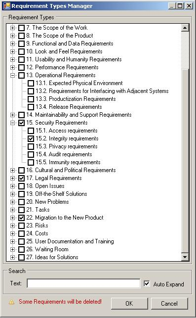

Types Manager
1. Select Project -> Types Manager
2. Select additional requirement types or remove any existing type. If you deselect some
requirement type that has some assigned requirements, you will be shown a notice.
3. Click OK to add/or remove selected requirement types.
